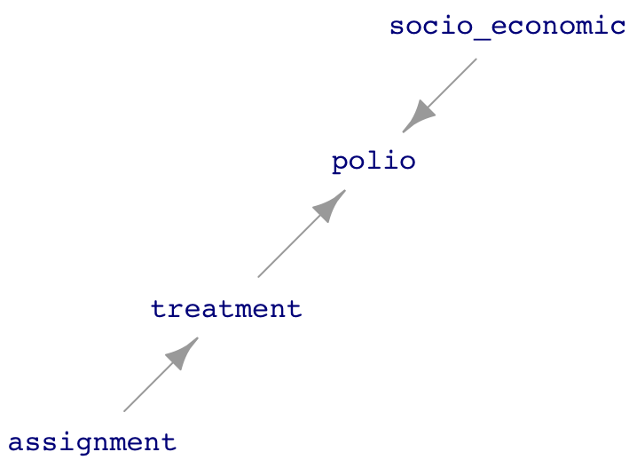

In its everyday meaning, the word “experiment” is similar to the word “experience.” As a verb, to experiment means to “try out new concepts or ways of doing things.” As a noun, an experiment is a “course of action tentatively adopted without being sure of the outcome.” Both quotes are from the Oxford Languages, which provides examples of each: “the designers experimented with new ideas in lighting” or “the farm is an ongoing experiment in sustainable living.”
From movies and other experiences, people associate experiments with science. Indeed, one of the dictionary definitions of “experiment” is “a scientific procedure undertaken to make a discovery, test a hypothesis, or demonstrate a known fact.”
Almost all the knowledge needed to perform a scientific experiment relates to the science itself: what reagents to use, how to measure the concentration of a neurotransmitter, how to administer a drug safely, and so on. This is why people who carry out scientific procedures are trained primarily in their area of science.
Example: Malaria and bed nets
In many parts of the world, malaria is a major cause of disability and death. Economists who study ways to relieve poverty have a simple, plausible theory: reducing the effect of illnesses such as malaria will impact poverty rates since healthier people are more productive. Reduced uncertainty about illness can help them amass capital to invest to increase production further.
There are many possible ways to reduce the burden of malaria. Vaccination (although effective vaccines have been hard to develop), insect control using pesticides (which can cause environmental problems), etc. One simple intervention is using bed nets, screens deployed at night by draping over the bed and its occupant. Still, there are reasons why distributing bed nets may not be effective; people might use them incorrectly or for other purposes such as fishing. People might not be able to afford them, but giving them away might signal that they have no value.
To find out, try it: experiment. For instance, run a trial program where nets are given away to everyone in an area and observe whether and to what extent rates of malarial illness go down.
Such a trial is undoubtedly an experiment. However, it may not be the best way to get meaningful information.
Replication
To understand some of the contribution that statistical thinking can make to experiment, recall our earlier definition:
Statistic thinking is the explanation/description of variation in the context of what remains unexplained/undescribed.
A key concept that statistical thinking brings to experiment is the idea of variation. Simply put, a good experiment should involve some variation. The simplest way to create variation is to repeat each experimental trial multiple times. This is called “replication.”
Example: Replicated bed net trials
One way to improve the simple experiment bed net described above is to conduct many trials. One reason is that the results from any single trial might be shaped by accidental or particular circumstances: the weather in the trial area was less favorable to mosquito reproduction; another government agency decided to help out by spraying pesticides broadly, and so on. Setting up trials in different areas can help to balance out these influences.
Replicated trials also allow us to estimate the size of the variability caused by accidental or particular factors. To illustrate, suppose a single trial is done. Result: the rate of malarial illness goes down by five percentage points. What can we conclude? The result is promising, but we can’t rule out that it is due to accidental factors other than bed nets. Why not? Because we have no idea how much unexplained variation is in play.
Table 26.1: Imagined bed net data
site
reduction
A
5
B
8
C
2
D
-1
E
3
F
1
G
4
H
0
I
2
J
6
Table 26.1 shows data from ten imagined trials on the effect of bed nets; one for each of ten different sites. (Reduction by a negative number, like reduction by -1, is an increase.) The mean reduction is three percentage points, but this number is not much use unless we can put it in the context of sampling variation. Conducting multiple trials introduces observed variation in results and thereby gives us a handle on the amount of sampling variation.
Using the regression framework makes estimating the amount of sampling variation easy. The mean reduction corresponds to the coefficient from the model reduction ~ 1.
The observed three percentage point mean reduction in malaria incidence does stand out from the noise: the confidence interval does not include zero. In these (imagined) data, we have confidence that we have seen a signal.
Control
However, there is still a problem with the design of the imagined bed-net experiment. What if the year the experiment was done was arid, reducing the mosquito population and, with it, the malaria infection rate? Then we don’t know whether the observed 3-point reduction is due to the weather or the bed nets, or even something else, e.g., better nutrition due to a drop in international prices for rice.
We need to measure what the change in malarial infection would have been without the bed-net intervention. Care needs to be taken here. If the trial sites were rural, comparing their malarial rates to urban areas as controls is inappropriate. We want to compare the trial sites with non-trial sites where the intervention was not carried out, the so-called “control” sites. The With_controls data frame imagines what data might look like if in half the sites no bed-net program was involved.
Table 26.2: With_controls, imagined data from a new study where five sites were used as controls.
site
reduction
nets
K
2
control
L
8
treatment
M
4
treatment
N
1
treatment
O
-1
control
P
-2
control
Q
0
control
R
2
treatment
S
3
treatment
T
2
control
The proper regression model for the With_controls data is reduction ~ nets:
The effect of the bed nets is summarized by the netstreatment coefficient, which compares the reduction between the treatment and control groups. In this new (imagined) data frame, the confidence interval on netstreatment touches close to zero; the signal is barely discernible from the noise.
The reader might wonder why, in moving to the controlled design, the ten sites were not all treated with nets and another ten or so sites selected to use as the control. The control sites could be chosen as villages near the bed net villages.
One reason is pragmatic: the more extensive project would require more effort and money. The more extensive project might be worthwhile; larger \(n\) would presumably narrow the confidence interval. Another reason, to be expanded on in the next section, is that the treatment and control sites should be as similar as possible. This can be surprisingly hard to achieve. Other factors, such as the enthusiasm or skepticism of the town leaders toward public-health interventions might be behind the choice of the original sites for the bed-net program. The control sites might be towns that turned down the original offer of the bed-net program and, accordingly, have different attitudes toward public health.
Example: Testing the Salk polio vaccine
Today, most children are vaccinated against polio, though a smaller fraction than in previous years. This might be because symptomatic polio is rare, lessening the perceived urgency of protecting against it. Partly, the reduction reflects the growth in the “anti-vax” movement, which became especially notable with the advent of COVID-19.
The first US polio epidemic occurred in 1916, just two years before the COVID-like “Spanish flu” pandemic. Up through the early 1950s, polio injured or killed hundreds of thousands of people, particularly children. Anxiety about the disease was similar to that seen in the first year of the COVID-19 pandemic.
“Spanish” is in quotes because Spain was not the source of the pandemic.
There were many attempts to develop a vaccine against polio. Jonas Salk created the first promising vaccine, the promise being based on laboratory tests. To establish the safety and effectiveness of the Salk vaccine, it needed to be tried in the field, with people. Two organizations, the US Public Health Service and the National Foundation for Infantile Paralysis, got together to organize a clinical field trial which, all told, involved two-million students in grades 1 through 3.
The two studies involved both a treatment and a control group. In some school districts, students in grades 1 and 3 were held as controls. The treatment group was students in grade 2 whose parents gave consent. We will call this “Study 1.” In other school districts, the study design was different: the parents of all students in all three grades were asked for consent. The students with parental consent were then randomly split into two groups: a treatment and a control. Call this “Study 2.”
The Study 2 design might seem inefficient; it reduced the number of children receiving the vaccine because half of the children with parental consent were left unvaccinated. On the other hand, it might be that children from families who consent to be given a vaccine are different in a systematic way from children whose families refuse, just as today’s anti-vax families might be different from “pro-vax” families.
Table 26.3: Results from polio Study 1
vaccine
size
rate
Treatment
225000
25
No consent
125000
44
Table 26.4: Results from polio Study 2
vaccine
size
rate
Treatment
200000
28
Control
200000
71
No consent
350000
46
As reported in Freedman (1998)1, the different risks of symptomatic polio between children from consenting versus refusing families became evident in the study. Table 26.3 shows a difference between the treatment and “no consent” groups: 25 per 100,000 in the treatment group got polio versus 44 per 100,000 in the “no consent” group. But we can’t untangle the effects of the vaccine itself from the effects associated with different families’ decisions. Confounding is a possibility.
Table 26.4 shows the results from the school districts that used half the consent group as controls. The difference between treatment and control groups is evident: a reduction from 71 cases per 100,000 children to 28 cases per 100,000. The no-consent children had a rate between the two, 46 per 100,000. Since both the “control” and “no consent” groups did not get the vaccine, one might expect those rates to be similar. That they are not demonstrates the confounding between consent and vaccine; the “no-consent” children are systematically different from those children whose parents gave consent.
The results from Study 2 demonstrate that the estimated effect of the vaccine from Study 1 understated the biological link between vaccination and reduction of polio risk. The confounding between consent and vaccine in Study 1 obscured the positive effect of the vaccine.
Random assignment
The example of the Salk vaccine trial is a chastening reminder that care must be taken when assigning treatment or control to the units in an experiment. Without such care, confounding enters into the picture. Merely the possibility of confounding damages the experiment’s result; it invites skepticism and doubt.
Figure 26.1: A simulation of the polio vaccine experiment.
It is illuminating to look at the vaccine trial as a DAG. The essential situation is diagrammed in Figure 26.1. The socio_economic node represents the idea that socio-economic status has an influence on susceptibility to symptomatic polio and also is a factor in shaping a family’s decision about giving consent. (In contrast to the usual expectation that lower socio-economic status is associated higher risk of disease, with polio the opposite holds true. The explanation usually given is that children who are exposed to the polio virus as infants do not become sick but do gain immunity to later infection. People later in childhood and in adulthood are at risk of a severe, symptomatic response to exposure. Polio is transmitted mainly via a fecal-oral route. Conditions favoring this route are more common among those of low socio-economic status. Consequently, infants of well-to-do families are less exposed to the virus and do not develop immunity. When they are eventually exposed to polio as children or adults, the well-to-do are at greater risk of developing disease.)
The DAG in Figure 26.1 has two pathways between treatment and polio that can produce confounding:
Figure 26.2: The DAG when consent\(\equiv\)vaccine.
The approach emphasized in Lesson 25 to avoid such confounding is blocking the relevant pathways. Both can be blocked by including consent as a covariate. However, in Study 1, assignment to vaccine was purely a matter of consent; consent and treatment are essentially the same variable. Figure 26.2 shows the corresponding DAG, where consent and treatment are merged into a single variable. Holding consent constant deprives the system of the explanatory variable and still introduces confounding through socio_economic.
In Study 2, all the children participating had parents give consent. This means that consent is not a variable; it doesn’t vary! The corresponding DAG, without consent as a factor, is drawn in Figure 26.3. This Study 2 DAG is unfolded; there are no confounding pathways! Thus, the model polio ~ treatment is appropriate.

Figure 26.3: The Study 2 DAG.
The assignment to treatment or control in Figure 26.3 is made by the people running the study. Although the DAG doesn’t show any inputs to assignment, the involvement of people in making the assignment opens up a possibility that other factors, such as socio-economic status, might have influenced their assignment of treatment or control. To guard against this, or even skepticism raised by the possibility, experimentalists have developed a simple safeguard: “random assignment.” In random assignment, assignment is made by a computer generating random numbers. Nobody believes that the computer algorithm is influenced by socio-economic status or any other factor that might be connected to polio in any way.
D. Freedman, R Pisani, R Purves, Statistics 3/e, p.6↩︎